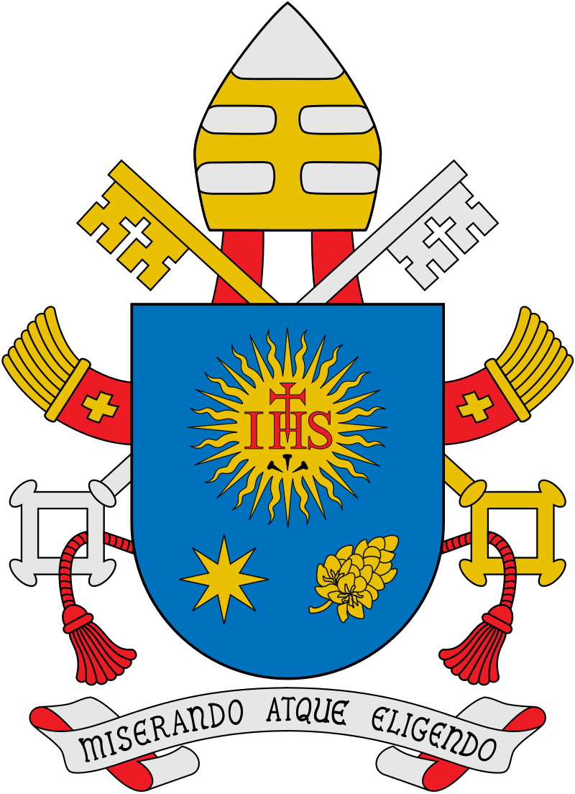
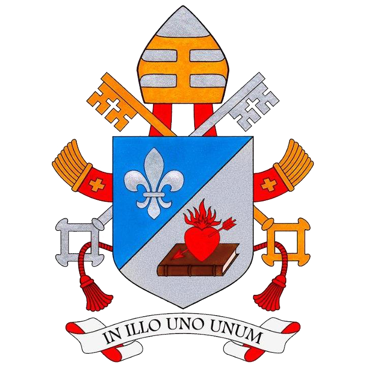

de wapens van de Pausen
 
Jaren geleden was ik op city-trip in Rome en kocht ik daar een poster met alle pausen op.
Bij de pausen die een wapenschild hadden, is dit ook afgebeeld.

De lijst eindigt bij Johannes Paulus II die paus werd in 1978 (het drie-pausen-jaar) tot zijn overlijden in 2005.
(Deze poster is dus uitgegeven na 1978 en voor 2005.)
In de 21ste eeuw hebben we tot hiertoe reeds 3 nieuwe pausen gehad:
Benedictus XVI (paus van 2005 tot zijn vrijwillig aftreden in 2013), Franciscus (paus van 2013 tot 2025) en de huidige paus Leo XIV (sinds 2025).

wapen van paus Benedictus XVI
wapen van paus Franciscus
wapen van paus Leo XIV
Opmerkingen:
We zien 4 maal het wapen van de familie 'de Medici' staan. (Leo X, Clemens VII, Pius IV en Leo XI)
Paus Pius IV (geboren in Milaan in 1499 en paus van 1559 tot aan zijn dood in 1565) gebruikte het wapen van 'de Medici',
ondanks het feit dat hij geen rechtstreekse familie was van de Medici van Florence.